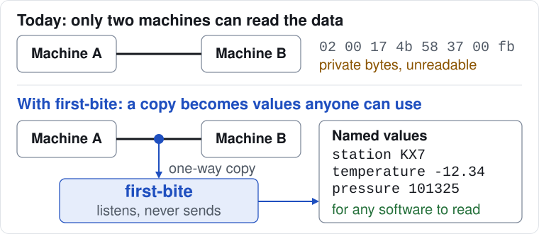
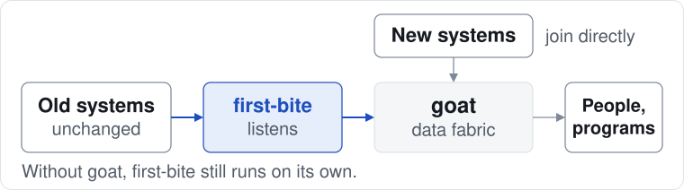
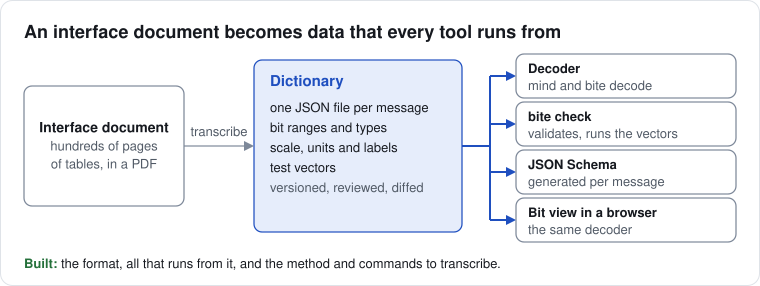
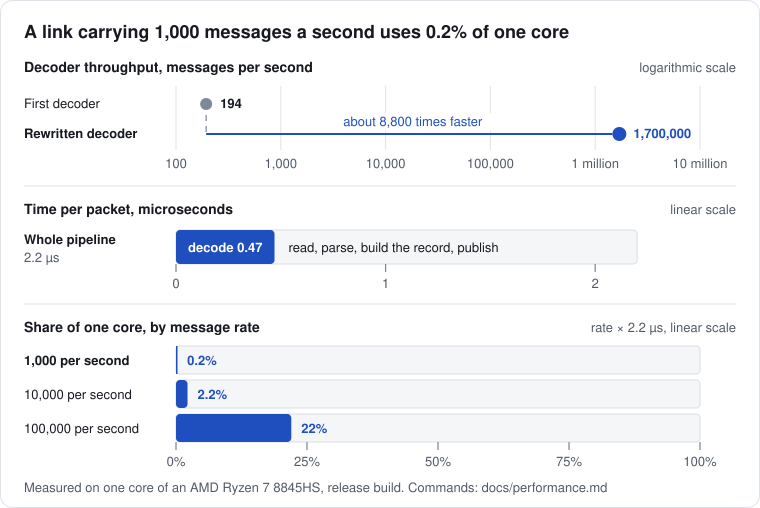
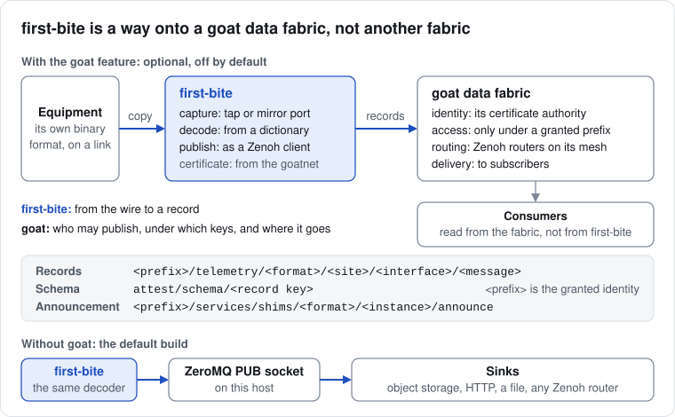

Old systems speak a private language. first-bite makes it readable to those you authorise.
Important equipment talks in private formats that only the two machines on a link understand. The meaning is locked in thick documents and old code, so nobody else sees the data, and any change is slow and risky.

first-bite listens to a copy of that traffic and turns each message into named values. It is one small program that runs on your network and never sends on the link.
See what a system really saysevery message, every value, by name
Prove old and new agreeread both during a migration and compare
Add new uses, change nothingthe certified system is not touched
A format you can maintaindata, not a 500-page document and old code
You decide who reads itnothing leaves the machine until you name a destination; a goat fabric admits by certificate

first-bite is part of GOAT. goat is the data fabric where new systems share data; first-bite is how old systems get onto it, unchanged.
The rest of this brief: how it works, from interface document to format description, performance, security.
first-bitetechnical brief
first-bitethe first bite of every byte, before it reaches its addressee
Technical brief
Binary messages off the wire, decoded and published, without touching the link
first-bite listens on a tap or a mirror port, local or tunnelled (ERSPAN/GRE), decodes fixed-layout binary messages against a dictionary, and publishes each one as a record of typed values, JSON by default, to the destinations its owner configures. It never transmits on the link it listens to.
450,000 / spackets through the whole pipeline on one core
0.2%of one core for a link carrying 1,000 messages per second
0frames sent on the capture interface
Open source, Apache License 2.0github.com/USAREUR-AF/first-bite
1. The problem
The data is on the wire, and only two systems can read it
A fixed-layout binary interface is built for the two systems at its ends. Every other system that needs the data has to become a third end, and each one that does adds work for the native system and risk to the link.
Four consumers, two ways. Left: each implements the binary interface and connects to a native system. Right: a tap, one decode, and consumers that read JSON.
What opening the interface costs today
A parser per consumer. Each one transcribes the interface document into code: bit offsets, scale factors, value labels. The copies drift apart when the interface changes.
A connection per consumer. The native system has to accept, serve and account for every new peer, and it was sized for the peers it already has.
A change to the operational system. Adding a peer means reconfiguring, retesting and often re-accrediting something that is in use.
A message set frozen into software. When the layout is compiled in, a new field is a new release of every consumer.
What a tap and one decoder change
The native systems are not touched. No new peer, no configuration change, no added load. The copy is taken from the link.
The interface document becomes maintainable data. A dictionary of JSON files holds every bit range and label, versioned and tested, so developers read and maintain it like code (page 6).
Consumers read records, as JSON or CBOR, from a socket on the host, or from storage, an HTTP endpoint or a data fabric. Adding the tenth consumer costs the native systems what adding the first did: nothing.
first-bite was built so that the owners of a tactical local network could read its traffic, which until then was visible only to the systems exchanging it.
first-bitetechnical brief
2. How it works
Copy, decode, publish: it listens and never transmits
first-bite reads a copy of the traffic, decodes it and publishes records on a different interface. What the copy costs the link depends on where it is taken.
Always: it only reads
The capture interface is opened for reading and first-bite never sends on it. If it stalls, crashes or is switched off, the native systems carry on as before.
On a passive tap: no way back
There is no path from the monitor ports to the link, so nothing downstream of the tap can delay, block or alter a frame, and nothing is lost at the tap.
On a mirror port: the switch copies
Forwarding is not affected, but the switch drops mirrored frames first when busy. A remote mirror also loads the network that carries its tunnel.
Four ways to take the copy. A breakout tap gives each direction its own monitor port. GRE and ERSPAN tunnels are unwrapped when seen; a VXLAN mirror needs its port named.
1
Capture. libpcap on one or more interfaces, with an optional kernel filter. A tunnelled mirror is unwrapped first.
2
Decode. Find the interface by port and the message by its type field, then extract every field the dictionary names.
3
Publish. One record per packet on a ZeroMQ PUB socket, under the topic interface/message: typed values, as JSON or CBOR.
first-bitetechnical brief
3. From frame to record
Twenty-three bytes in, nine named values out
The worked example is a test vector that ships with the project: one Observation message from the example weather-station dictionary. Every number in the figure comes from the dictionary file or from decoding these bytes.
One message, field by field. The fields include a signed scaled integer (4), a 20-bit value that is not byte-aligned (5), a float (7) and a little-endian integer (8).
An interface document becomes data that developers can maintain
An interface control document is hundreds of pages of tables that live in a PDF and in a few people's heads. A dictionary is the same interface as versioned, reviewable, testable data, and every tool runs from that one source.

One JSON file per message: each field is a bit range, a type and its labels
{
"description": "Sent every ten seconds while the station is powered.",
"fields": {
"uptime": {"start": 56, "stop": 88, "unit": "s"},
"battery_low": {"start": 88, "stop": 89, "type": "bool"},
"mode": {"start": 90, "stop": 92, "values": {"0": "Idle", "1": "Sampling", "2": "Calibrating"}}
}
}
What a developer gets
Read and reviewed like code. A revision of the document is a diff of a few files in version control.
Proved by test vectors. Each is a payload and what it must decode to, computed independently of the decoder.
A schema for consumers.bite schema generates a JSON Schema per message, with bounds, labels and units.
Status
Built: the format, bite check, test vectors, JSON Schema export and the bit view in a browser; and the method for going from a document to a dictionary, with bite commands for the error-prone steps and a worked example (docs/icd-to-dictionary/).
What bite check catches
error
a file that is not valid JSON or lacks a required key
error
an empty or inverted bit range; an integer wider than 64 bits; a float that is not 32 or 64 bits
error
a text or little-endian field that is not byte-aligned; two interfaces claiming one port
failure
a vector that does not decode to what it expects
warning
overlapping fields; a message no type value names; a type value with no message file
The whole pipeline takes 2.2 microseconds per packet on one core, so the decoder is not what limits a deployment. Every figure below was produced by a command in the repository and can be reproduced on your hardware.

Measured
0.47 µs
to decode one message: 2.1 million messages, 13.6 million fields per second
2.2 µs
for the whole pipeline: read a frame, parse Ethernet/IP/UDP, decode, build the record, publish it as JSON. 450,000 packets per second, the median of seven runs over 2,000,000 packets
10.9 MB
resident memory while replaying a 145 MB capture
500 of 500
packets decoded in live capture on two interfaces at once, none dropped
194 to 1,700,000
messages per second: this project's first decoder against its rewrite, on the same 1,658 recorded messages
How
One core of an AMD Ryzen 7 8845HS, a 2024 laptop-class processor, under Linux, with a release build of the 1.1.0 code on 2026-11-15, the machine also running other work. The load is the weather-station vectors repeated; the pipeline is one thread.
The cost per packet does not grow with the dictionary: the interface and the message are each one hash lookup.
Not measured
Live capture at high packet rates on a physical tap, where the network card, the kernel buffer and the sinks set the limit. The loss counters on page 9 show when one of them does.
first-bitetechnical brief
6. One decode, many consumers
Decoded once, delivered wherever it is needed
A consumer on the host subscribes to the record socket, or reads what a sink forwarded. Adding one changes nothing on the tapped link or in the decoder.
Where records can go
Destination
How
Status
A ZeroMQ subscriber on the same host
SUB socket with a topic filter; the socket binds loopback by default
built
S3-compatible or Azure Blob storage
sink, over HTTPS
built
HTTPS endpoint
sink, one POST per record
built
A Zenoh router
sink over TLS or QUIC, one key per interface and message
built
Local file
sink
built
Cursor-on-Target
transform from a field mapping, on its own socket
built
On a goat data fabric (optional, off by default)
goat is the data fabric: the network, the certificate authority, the Zenoh routers and their access rules. first-bite is not another fabric or another way to manage data. Built with the goat feature, it is one of the ways data gets onto a goat fabric, under a certificate the goatnet issued. Without goat it runs as the rest of this brief describes.
Built: configuration from an onboarding archive, certificate checks, records, a schema declaration per key, an announcement and a heartbeat. Measured: the whole path against a stock Zenoh 1.9.0 router configured as goat configures one. Not built: a run against a real goatnet.
The record
Values are typed: numbers and booleans, not text. The socket and each sink write JSON by default or CBOR, set by encoding. One security block states the level every path is held to.

first-bitetechnical brief
7. Deployment
One archive beside the link, and nothing to install first
A deployment is a tap or a mirror session, a small host with one or two spare network interfaces, the 14.67 MB portable mind binary and a dictionary. The binary carries libpcap and ZeroMQ inside it, so the target needs no package installed.
The installer asks no questions, checks the interface, libpcap and the dictionary before it changes anything, and prints what it installed. Settings live in /etc/first-bite/first-bite.env, where a second capture interface is added to FIRST_BITE_INTERFACE; an upgrade keeps them.
Which Linux archive
linux-gnu
the default: Ubuntu 20.04 or later, or any distribution with glibc 2.31 or later
linux-musl
fully static, for a machine with no glibc or an older one: Alpine, busybox, a cut-down system
Prepare the capture interfaces
No address, no ARP, no offloading that merges or splits frames: docs/tap.md has the commands.
Know whether frames were lost
Every minute and at shutdown mind logs one line per interface, at warning level when a count has grown:
capture enp3s0: 1200344 seen by kernel,
0 dropped by kernel, 0 by interface,
0 in queue
Counter grows
Meaning
Do
dropped by kernel
capture buffer full
raise --buffer-mb, add a filter
by interface
card or driver discarded frames
raise the receive ring
in queue
pipeline behind; a sink is blocking
check the sink
The record socket binds loopback by default. Other hosts read through the Zenoh or HTTPS sinks, never from the socket.
first-bitetechnical brief
8. Trust
What you can verify before it goes near a network
Putting a new box beside an operational link is a decision about risk. These are the properties that bound it, and where to check each one.
It listens only
The capture path opens interfaces for reading and has no code that sends on them. On a passive tap the monitor ports have no path back to the link; a mirror port relies on the switch.
Check: mind/src/source.rs; docs/tap.md.
It runs with two capabilities
The service runs as its own system user with CAP_NET_RAW and CAP_NET_ADMIN and no others. Its configuration is readable by root and that user only, because it can hold storage credentials.
Check: deployment/first-bite.service.
You state how records may leave
The record socket is plaintext and unauthenticated and binds loopback by default; other hosts read through the Zenoh or HTTPS sinks. A security block sets the level every path is held to: TLS or mutual TLS, minimum TLS version, hybrid post-quantum key exchange, the FIPS module, QUIC. Under it mind refuses to start when a path cannot meet the level, and refuses the socket off loopback.
Check: mind security show; docs/security/transport.md.
The build is checked and traceable
Every code change is formatted, linted with warnings as errors, and tested on Linux and macOS. Dependencies pass a licence policy (cargo-deny) and an advisory scan (cargo-audit). Each release carries an SPDX SBOM, checksums and a build provenance attestation.
Check: gh attestation verify <archive>.
It builds without the internet
make vendor copies every dependency into the tree, and the offline machine builds with cargo build --locked --offline. What you review is what you run.
Check: docs/deployment.md, "Build without internet access".
The licence is Apache-2.0
Use, modify and redistribute it, including inside a closed system. The repository holds the decoder, the pipeline, the sinks and four example dictionaries.
It holds no dictionary for a restricted message set, no capture of real traffic and no identifier of a real deployment; a gate in CI refuses them.
VLAN tags skipped; GRE, ERSPAN and VXLAN mirrors unwrapped (not yet run against a switch)
built
systemd unit (not yet run under systemd)
built
Not yet
Status
64-bit Arm Linux, macOS and Windows archives
built in CI; not run locally
Decoder library for iOS and Android
compile-checked
SocketCAN capture source
designed, not built
Typed records and schemas published on the fabric
designed, not built
Which interface, and so which direction, a record came from
not built
Reassembly of fragmented IP datagrams and TCP streams
not built
Hardware timestamps; DBC import; MIL-STD-1553 and ARINC 429 sources
not built
Try it in five minutes
make build
cargo run -p bite -- check dictionaries/weather-station
cargo run -p mind -- \
--pcap-file examples/weather-station.pcap \
--dictionary dictionaries/weather-station --output
Needs a Rust toolchain, a C/C++ compiler, CMake and the libpcap headers. The last command replays a capture through the whole pipeline and publishes on tcp://*:12000.
To put it on a link
Write the dictionary for your interface, with vectors.